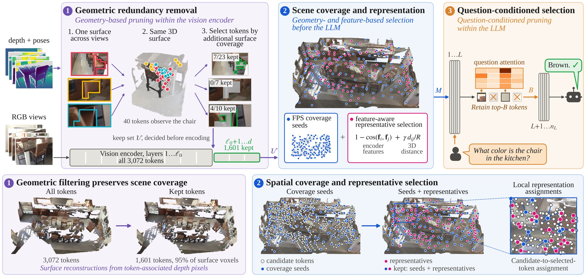
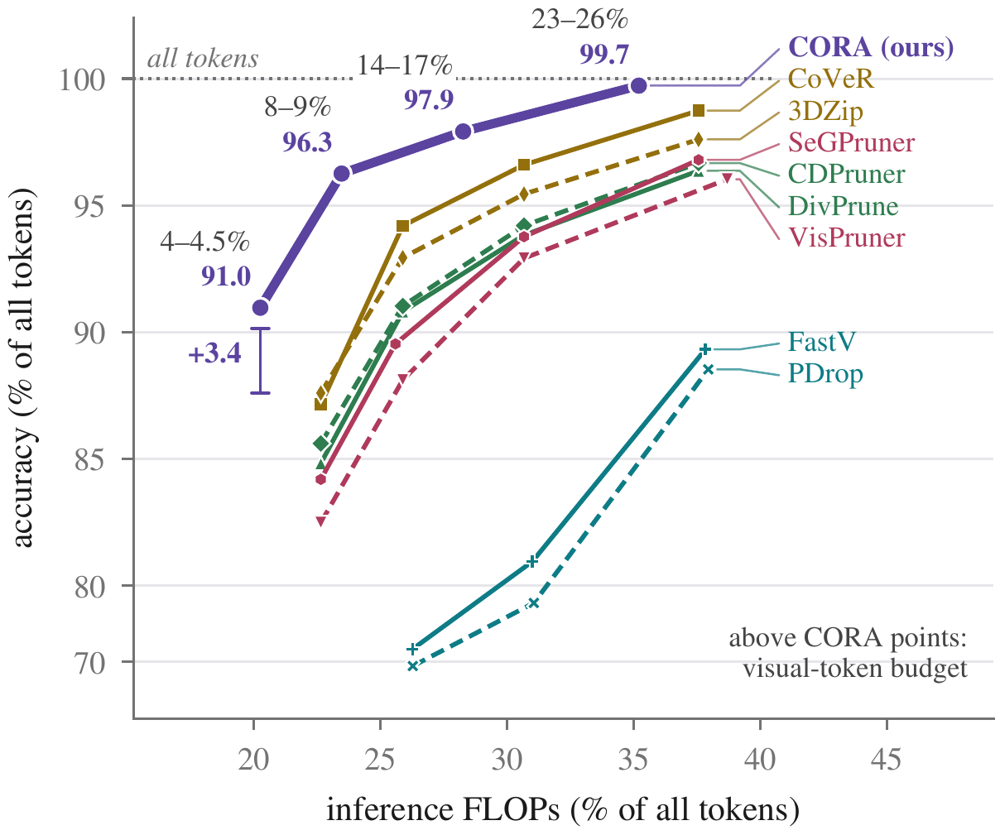

Many views, many repeated tokens
Vision-language models can answer questions about a 3D scene from a set of views, but the views see the same surfaces again and again. InternVL3-8B turns 12 views into 3,072 visual tokens, and much of that is repeated evidence. Compressing hard forces a choice: select early and risk losing scene evidence the question needs, or prune late and spend computation on duplicates first.
CORA splits the work across the network under one fixed layer-averaged visual-token budget. Geometry removes repeated observations inside the vision encoder, a compact and representative scene context enters the language model, and once that context has met the question, question-to-visual attention keeps a smaller set for the remaining layers. It runs on frozen models, and the question-independent scene selections can be reused across questions about the same scene.
Three stages, one token budget

Pipeline. Stage 1 drops tokens that observe surfaces already covered by other views before the last encoder layers. Stage 2 picks M tokens from 3D coverage seeds plus feature-aware representatives. Stage 3 keeps the top B tokens by question attention after LLM layer L.
Geometric redundancy removal
Tokens are back-projected with depth and camera poses into 5 cm voxels. A greedy cover keeps the tokens that reach 95% of the observed surface, and only those run through the final encoder layers.
Scene coverage and representation
3D farthest-point seeds spread the selection over the whole scene, then weighted facility location adds tokens that best represent the rest, scoring candidates by encoder-feature similarity and 3D distance.
Question-conditioned selection
After layer L, attention from the question to the visual tokens ranks the M scene tokens, and the top B continue through the remaining layers.
B = round(r·M), r = 0.5
The layer-averaged count (L·M + (nL−L)·B)/nL matches the budget K. On InternVL3-8B at 4.5%: K = 138, M = 176 for layers 1–16 and B = 88 for the remaining 12 layers.
Follow one scene through CORA
Click a stage to watch what it does to a real ScanNet scene (scene0088_00, 12 RGB-D views) when InternVL3-8B answers “Describe the scene in detail.” at a 4.5% budget. Every token, seed, assignment and attention score shown is the one CORA computed for this question.
The 12 input views with the same tokens outlined. Hover or tap a view to highlight its tokens in 3D.
Results on 3D question answering
Four frozen backbones (InternVL3-8B, Qwen3-VL-8B and -4B, LLaVA-OneVision-7B) on three benchmarks (ScanQA, SQA3D and VSI-Bench). CORA has the best reduced-token score in 44 of 48 evaluated configurations, with the largest margins at the lowest budgets.

Accuracy versus compute. Accuracy and inference FLOPs (vision encoder + LLM prefill), relative to full-token inference and averaged over four backbones and three datasets. Points are labelled by visual-token budget. At 4–4.5%, CORA retains 91.0% of full-token accuracy versus 87.6% for the strongest baseline.
Video question answering with predicted geometry
CORA also runs on video: 12 frames per video, with geometry predicted by VGGT. Against SeGPruner, CoVeR and 3DZip it has the highest score in 14 of 16 evaluated configurations, including all eight at a 4.5% budget.
Most accurate and fastest to the first token
ScanQA at a 9% budget, averaged over InternVL3-8B, Qwen3-VL-8B and LLaVA-OneVision-7B with scene selections reused across questions. CORA has the highest mean accuracy and the lowest mean time to first token (302 ms) among the reduced-token methods, a mean per-backbone speed-up of 3.58× over all tokens.
BibTeX
@misc{shukla2026cora,
title = {{CORA}: Geometry- and Question-Aware Visual Token Reduction
for Multi-View {3D} Question Answering},
author = {Shukla, Nitish and Bui, Nhat-Tan and Jandial, Surgan and
Mallick, Saswat Subhajyoti and Ross, Arun},
year = {2026}
}